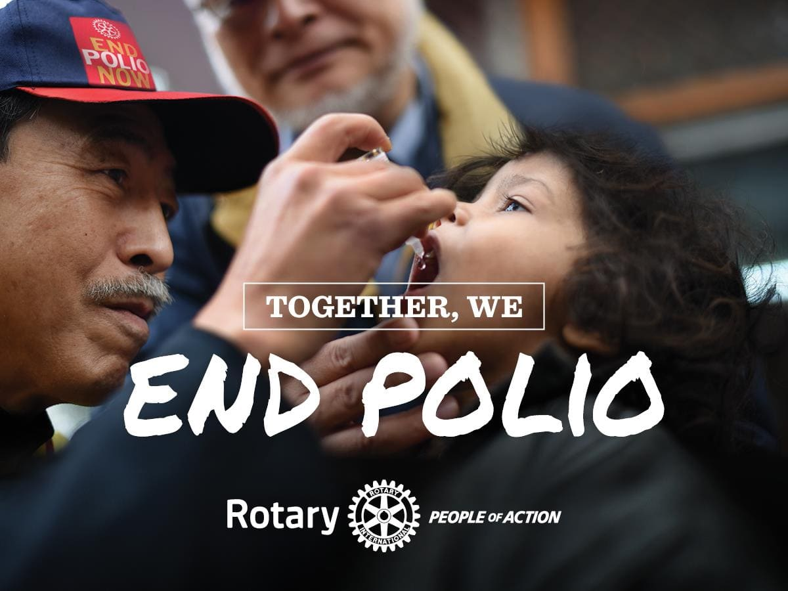

Rotary trabaja desde hace más de 35 años para erradicar la polio y se han logrado grandes progresos. Como entidad Fundación Rotaria, se ha ayudado a reducir el número de casos a un 99.9%. La meta es Zero Polio, para mantener al mundo libre de este flagelo, incluyendo los últimos dos países en que sigue siendo endémica; por medio de la vacunación oportuna. Nuestra tarea continúa. Tu contribución nos acercará a la meta, con los fondos recaudados podremos continuar las campañas de vacunación y las labores de vigilancia epidemiológica.